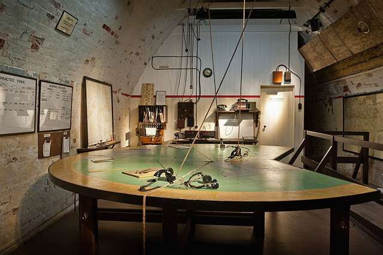
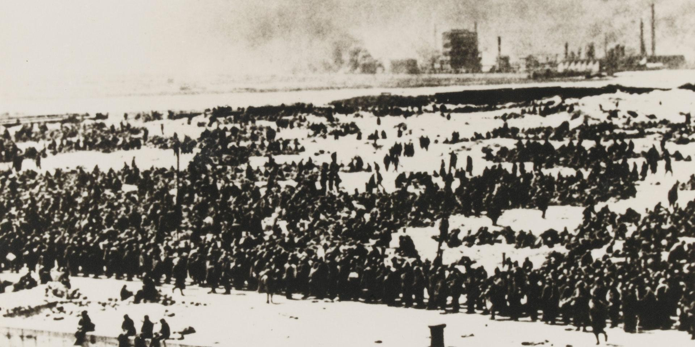
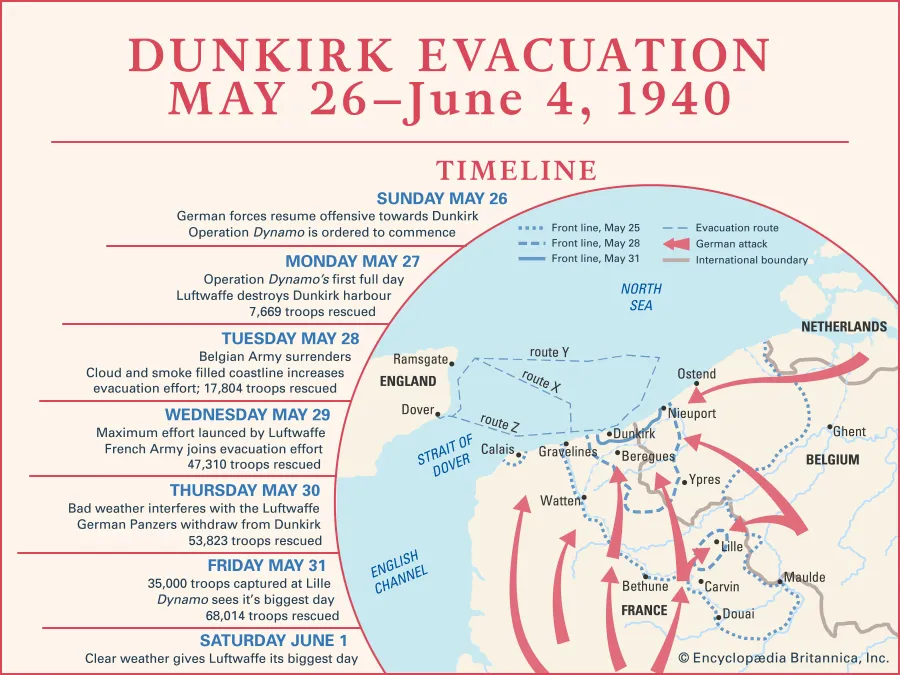
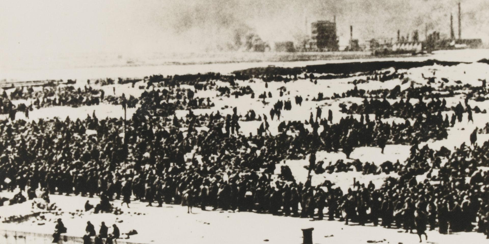
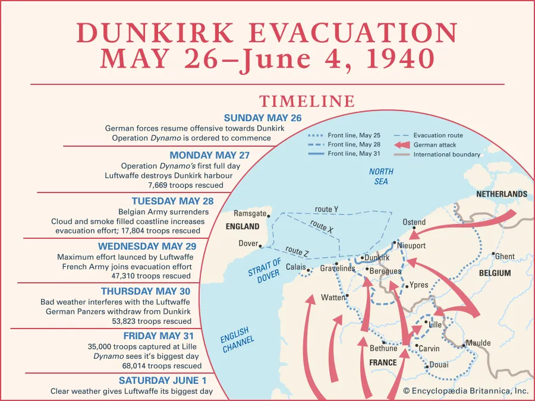

THE MISSION
OPERATION DYNAMO
THE MISSION
THE MAN
THE IMPACT
Why were the allies at Dunkirk?
Operation dynamo, or the miracle of dunkirk, was the largest
evacuation mission of world war II. It was on the beaches of
Dunkirk where more than 300,000 allied soldiers were stranded,
and surrounded by axis powers. Operation Dynamo was a major
leadership feat and was only accomplished because of the man
who planned it: Vice Admiral Bertram Ramsay. This amazing feat
was a major turning point in world war II, that boosted the morale
of the Allied powers, saved thousands of lives, and gave them the
manpower to keep fighting.
The plan
 


